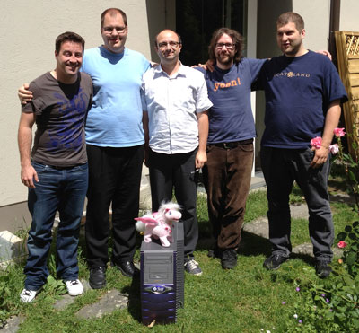

The Swiss company Adfinis SyGroup is active in the Apache OpenOffice project, contributing the Solaris build, as well hosting an OpenGrok index of the OpenOffice source code. The following interview was conducted via email between PMC member Rob Weir (R) and Nicolas Christener of Adfinis SyGroup (N).
(Apache OpenOffice is currently undergoing Incubation at the Apache Software Foundation.)
R: Please tell our readers a little about yourself and Adfinis SyGroup.
N: Adfinis SyGroup AG was founded a few months ago as a result of the merge of the two companies (Adfinis and SyGroup). We have two offices in Switzerland (one in Berne and one in Basel) and around 35 employees whereof most of them are engineers.
We strongly focus on services around OpenSource technologies and have two departments. The system engineering team builds and operates server and services built on Linux/Unix and the software team develops/customizes applications based on OpenSource.
Currently we have five people involved in our work on Apache OpenOffice: David, Denis, Hans, Nicolas and Matthias.
(In the above photograph, from left to right are: Nicolas, Denis, Hans, Matthias, Dave)
R: What got you interested in Apache OpenOffice? Were you involved at all in OpenOffice.org previously?
N: I started to build OpenOffice.org packages for the Paldo Linux distribution a few years ago and acquired a decent knowledge about the needed steps to get a proper OOo build. This involvement enabled us to make contacts in the OpenOffice community in Switzerland and concluded our first contracts for OOo consulting and engineering. Oracle's end-of-support for OOo enabled us to step in and provide services and support for other customers as well.
R: Describe some of the technical work you did to get a successful Solaris port of Apache OpenOffice 3.4?
N: As the previous builds on Solaris were mostly done by Sun and Oracle the information about this topic were quite sparse. For example, we did not know the exact compiler which was used, we didn't know what flavor of Solaris was used, and it seemed that the people who knew those things disappeared.
We decided to start with the latest OOo version, which was released on Solaris, because we knew that this one is buildable on Solaris. With the knowledge we gained during this process, we took a stab at the development version of AOO 3.4 and got a working build quite fast, which was very motivating. Most of the build breakers could be solved by patching the build system (only one modification in the code).
As one of our customers uses 3rd-party binary extensions we were concerned to maintain ABI compatibility - therefore we used the SolarisStudio compilers for our work. After we delivered a first build to our customer, they reported two major bugs which we had to fix in order to make a deployment on their system possible. It took us some time to find proper solutions for those bugs, but thanks to the great support by the community we were able to fix them and build a new version which seems to work as expected.
Finding suitable SPARC hardware is a bit of an issue too. Our current machine runs OpenSolaris 2009.06 - we hope to get better hardware soon which would also be capable of running Solaris 11.
R: What items remain before it is complete?
N: We are currently in the QA phase and wait for a final feedback from our customer. As soon as our customer decides that the build can be used for deployment (>200 workstations, many documents with several hundred or even over thousand pages, Writer is one of the most essential tool in their daily work-flow) we will build AOO 3.4 for all languages and if possible also as Solaris packages (*.pkg).
We'll make those builds available for free download and try to do this upcoming versions as well. It is important to us that the Solaris SPARC build stays well maintained. Therefore we'd like to have a continuous/nightly build, where developers can check the build logs in order to see whether their latest check-in works on Solaris SPARC. We are working on providing an official build bot for the project.
R: If someone wants to help test this port, where can they find it?
We upload all our builds to our website:
We are also interested in creating official community builds for AOO and would be glad to talk about such opportunities.
R: Do you have maybe top three tips for Linux application developers, on things to be careful about, if they want their applications to be more portable?
N: Especially concerning AOO we would like to point out that many large companies/organizations use software in their data-center (i.e., for thin-clients). In such an environment Solaris/SPARC is still a big player and a great many users depend on well-maintained ports. Therefore these deployments/technologies concern all developers and we encourage everyone to keep in mind:
- There are other processors than Intel.
- There are other operating systems than Windows/Linux/OS X.
- There are other tool chains than GNU.
Buildbots are a great help to keep up this awareness.
Thank you very much for the interview! We would also like to thank Raphael Bircher for his continuous support and the whole community which does a great job in delivering a high quality office productivity suite.